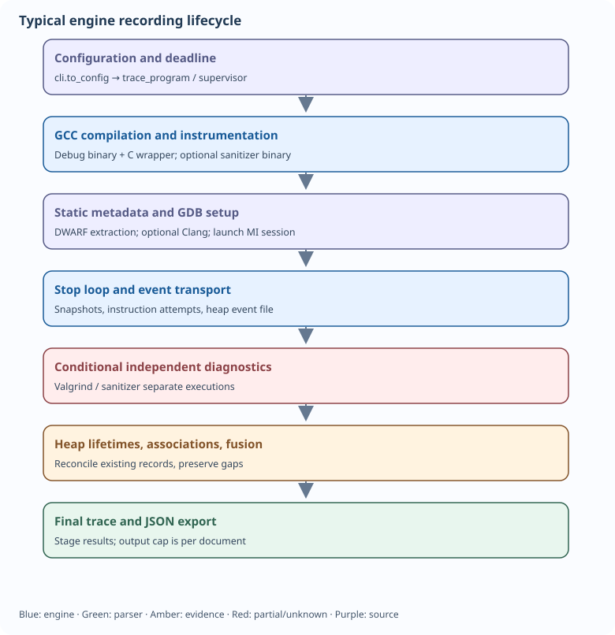

5 · Trace Engine architecture #
Two terms first #
| Term | Meaning |
|---|---|
| Supervisor | Sets deadlines and manages child tool processes, so a hung compiler or debugger can't run forever unnoticed. |
| Subsystem | A group of related source files. Example: gdb_mi talks to GDB; recorder saves what was observed. |
What happens at one pause #
When GDB pauses, the engine:
- checks why it stopped,
- collects the current frame (the executing function and its local variables),
- reads new allocator log lines, and
- saves a snapshot.
Later, it may run a sanitizer in a separate execution.
Entry points: trace::trace_program arranges timeouts and cleanup, trace_program_inner organizes the work, and run_gdb_phase handles the debugger.
Subsystems, as a journey #

| Order | Module | Job |
|---|---|---|
| 1 | cli, config | Turn your command into a request |
| 2 | supervisor, resource_limits | Watch time and other limits |
| 3 | compiler | Ask GCC to build the debug program (including the C allocation wrapper) and report compiler errors |
| 4 | gdb_mi, mi_parser | Send commands to GDB / translate GDB's text replies into fields |
| 5 | recorder, storage | Remember pauses and attempted instructions / write a bounded JSONL journal |
| 6 | allocation_tracker | Turn wrapper log lines into recorded heap events |
| 7 | dwarf, clang_ast (optional), evidence | Link records to type or source descriptions, only when a match is justified |
| 8 | valgrind, sanitizer | Handle the other runs |
| 9 | models, json_export | Define the result / write the final JSON |
Inside the stop loop #
At a pause, GDB reports the address of the instruction the program is about to execute. The loop then:
- reads new output and wrapper events,
- finds out why the program paused,
- captures current state within its budgets, and
- decides how to continue.
Two GDB messages look alike but differ: "I accepted your continue command" is not "the program stopped again." If the loop skips an interval inside a library or wrapper, it records a gap rather than inventing instruction records.
More: debugger chapter (step-by-step example), call-flow explorer (checked code paths).
Runtime order and conditionals #


The diagram is an overview; not every optional pass always runs at one fixed point.
| Situation | What happens |
|---|---|
| Sanitizer trigger already met | The sanitizer pass can run before Valgrind |
| Trigger not yet met | The Valgrind result may decide whether the sanitizer runs |
| After runtime and heap records are assembled | DWARF association and evidence fusion (linking records from different providers, only where justified) |
| Clang configured | Clang extraction runs (it's optional) |
| Compilation fails | A trace with diagnostics is returned, with no GDB observations |
See src/trace.rs and process boundaries for exact branches.
Follow the implementation #
| Location | What happens there |
|---|---|
src/main.rs:34 | Calls trace::trace_program |
src/trace.rs:132 | Supervises the session |
src/trace.rs:167 | Orchestrates it |
src/trace.rs:1113 | Begins the debugger phase |
The source index lists all files. Function-to-function call claims belong in the verified explorer, not in arrows inferred between module names.